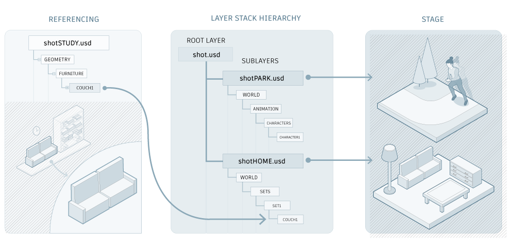

Create a USD stage
A stage is a USD root file and all of its layers. A stage is an important part of USD set assembly. A USD set is a single complex asset made from individual USD assets. Artists can take a collection of USD assets on disk and use USD mechanisms like references, variants, and filtering to assemble it in Maya. For example, an artist can create an empty stage in Maya and reference in existing USD assets to create a USD set.
The following example shows how different departments can use layers to organize scene description: shotPark.usd is worked on by the animation department and shotHome.usd is worked on by the sets department.

USD stage creation menu items can be found in the following interface navigation paths:
- In the USD Layer Editor, Create > Stage with New Layer or Stage from File (recommended) > Note: To open the USD Layer Editor, Select Windows > USD Layer Editor.
- Create > Universal Scene Description > Stage with New Layer or Stage from File
There are two ways to create a stage in Maya:
 Create a Stage with New Layer:
Create a Stage with New Layer:
Start with a new, empty stage and new anonymous layer. Maya creates an empty proxyShape node in the Outliner and a new anonymous root layer in the USD Layer Editor. Work with the USD Layer Editor to build and manage your Layer Stack. You can add sublayers from here and populate your layer stack to build the scope of your stage from scratch.
 Create a Stage from File:
Create a Stage from File:
Start with an existing file with layers. Maya creates a proxyShape node in the Outliner, which points to an existing USD file. Upon selection, a browser will appear to let you select an existing file.
Related Concepts: The USD stage workflow in the Outliner and USD Layer Editor is unique to Maya, but it's based on concepts that are explained in the Pixar USD glossary. If you're new to USD, you can get started by learning about relevant terms including, stage, stage traversal, prim, composition, composition arcs, LIVRPS strength ordering, opinions, and references.